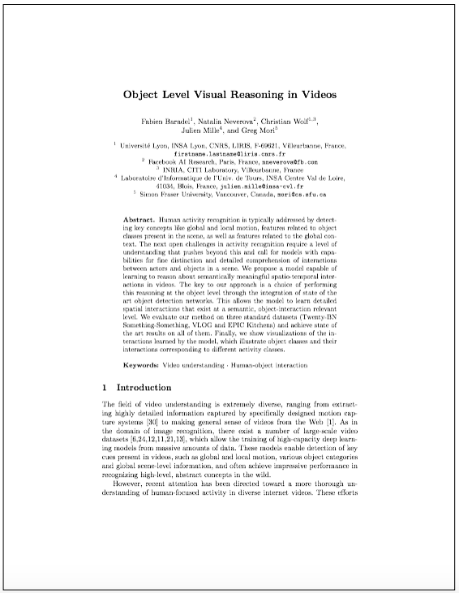

Object level Visual Reasoning in Videos

Fabien Baradel
INSA Lyon

Natalia Neverova
Facebook Research

Christian Wolf
INRIA - INSA Lyon

Julien Mille
INSA Centre Val de Loire

Greg Mori
Simon Fraser University

ECCV 2018
Abstract
Human activity recognition is typically addressed by detecting key concepts like global and local motion, features related to object classes present in the scene, as well as features related to the global context. The next open challenges in activity recognition require a level of understanding that pushes beyond this and call for models with capabilities for fine distinction and detailed comprehension of interactions between actors and objects in a scene. We propose a model capable of learning to reason about semantically meaningful spatio-temporal interactions in videos. The key to our approach is a choice of performing this reasoning at the object level through the integration of state of the art object detection networks. This allows the model to learn detailed spatial interactions that exist at a semantic, object-interaction relevant level. We evaluate our method on three standard datasets (Twenty-BN Something-Something, VLOG and EPIC Kitchens) and achieve state of the art results on all of them. Finally, we show visualizations of the interactions learned by the model, which illustrate object classes and their interactions corresponding to different activity classes.


What happened between these two frames?
Humans have this extraordinary ability of performing visual reasoning on very complicated tasks while it
remains unattainable for contemporary computer vision algorithms (Below a carrot was chopped by the human).